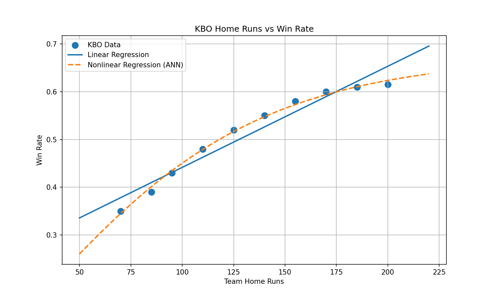

KBO 야구팀의 시즌 홈런 수와 승률 데이터를 이용하여 선형회귀와 비선형회귀(인공신경망) 모델을 구축하였다.
홈런 수를 입력하면 두 회귀모델이 예상 승률을 계산하고, 예측된 승률을 기준으로 예상 순위 구간을 확인할 수 있다.
| 팀 | 홈런 수 | 승률 |
|---|---|---|
| 팀 1 | 70 | 0.350 |
| 팀 2 | 85 | 0.390 |
| 팀 3 | 95 | 0.430 |
| 팀 4 | 110 | 0.480 |
| 팀 5 | 125 | 0.520 |
| 팀 6 | 140 | 0.550 |
| 팀 7 | 155 | 0.580 |
| 팀 8 | 170 | 0.600 |
| 팀 9 | 185 | 0.610 |
| 팀 10 | 200 | 0.615 |
1~2위: 승률 0.580 이상
3~5위: 승률 0.520 이상 ~ 0.580 미만
6~8위: 승률 0.450 이상 ~ 0.520 미만
9~10위: 승률 0.450 미만
예측하고 싶은 팀의 시즌 홈런 수를 입력하세요.
※ 순위는 홈런 수가 아니라 예측된 승률을 기준으로 결정됩니다.

홈런 수와 승률 데이터를 이용하여 선형회귀와 비선형회귀 모델을 구축하였다.
입력된 홈런 수는 회귀모델의 입력값으로 사용되며, 모델이 예측한 승률을 기준으로 예상 순위 구간을 결정한다.